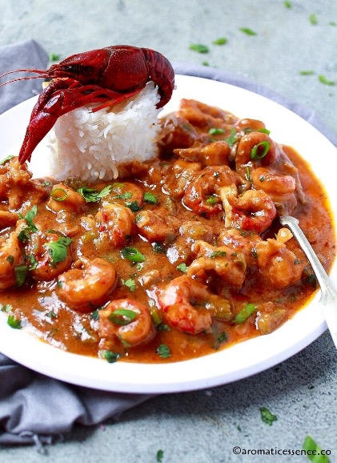

Crawfish Étouffée

Description
A tasty Cajun Classic. This dish combines a roux, mudbugs, various garnishes and rice to create an unbelievably tasty
and sometimes spicy dish.
Ingredients
- 3 cups long grain white rice
- 7 cups water, divided
- 3/4 cup butter
- 1 large onion chopped
- 1 clove garlic chopped
- 1/4 cup all-purpose flour
- 2 tablespoons canned tomato sauce
- 1 pound crawfish tails
- 6 green onions, chopped
- salt and peper to taste
- 1 1/2 tablespoons Cajun seasoning, or to taste
Steps
- Combine rice and 6 cups water in a saucepan. Bring to a boil over high heat.
- Reduce heat to low, cover the pan, and simmer until rice is tender and water has been absorbed, 15 to 20 minutes.
- While rice cooks, melt butter in a large skillet over medium heat. Add onion and cook, stirring, until transparent. Stir in garlic and cook until fragrant, about 1 minute.
- Stir in flour until blended. Gradually stir in tomato sauce and remaining 1 cup water. Add crawfish tails and bring to a simmer.
- Stir in green onions and season with salt, pepper, and Cajun seasoning.
- Reduce heat to low and simmer until crawfish is cooked through but not tough, 5 to 10 minutes.
- Serve étouffée over cooked rice.